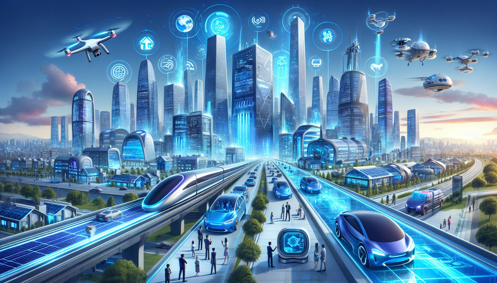

Geleceğin Teknolojileri
Aklı, fikir üretme yetisi ve hayal gücü, insanoğlunu dünya sahnesine çıktığı andan itibaren gelecekteki konumunu ve çevresindeki gelişmeleri yorumlamaya sevk etmiş, çoğu zaman da bu yorumlar, yeni kuşaklar tarafından bizzat yaşanmıştır. Bugün, daha gerçekçi yorumlar yapabilmemize olanak sunan ipuçlarına da sahibiz. Örneğin teknolojinin gelişim hızına şahit oluyor, hayal dünyamızı daha çok sulayabiliyoruz. İşte “Dünyayı değiştirecek geleceğin teknolojileri nelerdir?” sorusuna aklımız, fikir üretme yetimiz, hayal gücümüz ve ipuçları aracılığıyla verebildiğimiz bugünkü yanıtlardan birkaçı: .
YAPAY ZEKÂ VE NANOBOTLAR Yapay zekâ bugün hayatımızın her alanına sızmış durumda. Makinelerde, akıllı telefonlarda, robotlarda vb. pek çok nesnede kullanılıyor. Bu durum, kimi mesleklerde iş kayıplarına neden oluyor gibi görünse de esasında yapay zekâ ile yeni iş kapıları da açılıyor. Diğer bir ifadeyle Sanayi Devrimi’yle birlikte yaşanan dönüşüm, şu an yapay zekâ ile yaşanıyor. Örneğin robotlar sayesinde tehlikeli işler riske yol açmadan, hızlı ve hassas şekilde tamamlanabiliyor ancak robot üretiminde insan gücüne ihtiyaç duyuluyor.
ELEKTRİKLİ VE OTONOM ARAÇLAR Elektrikli araç ile otonom sürüş kavramları, 2020 yılını görenler için yabancı kavramlar değil ancak gelecekte bu teknolojilerin geçmişten günümüze getirdiğimiz ulaşım sektöründeki klasik teknolojileri tamamen unutturması bekleniyor. Bu kapsamda öngörülen, elektrikli araçların bataryalarının daha uzun süreli kullanıma imkân sunacak şekilde güçlendirileceği, şarj istasyonlarının yaygınlaştırılarak kolayca ulaşılan noktalarda boy göstereceği. Öte yandan otonom araç teknolojisinin yaygın olarak kullanılmaya başlaması ve böylelikle şoförlere duyulan ihtiyacın büyük oranda ortadan kalkmasının, ölüm ve yaralanmayla sonuçlanan kazaları önemli oranda azaltacağı ve kişilerin kendine vakit ayırmasını mümkün hâle getireceği de düşünülüyor. Bu teknolojiyi binek araçlarla sınırlandırmak imkânsız: Yakın gelecekte yük taşıyan kamyonları ve insan taşıyan otobüsleri de sürücüsüz olarak yollarda görmek mümkün. Araç üreticileri bu değişime yavaş yavaş adapte olmaya başladı. Görülen o ki gelecekte üretilen araçların tamamı elektrikli ya da otonom araç özelliklerine haiz olacak.